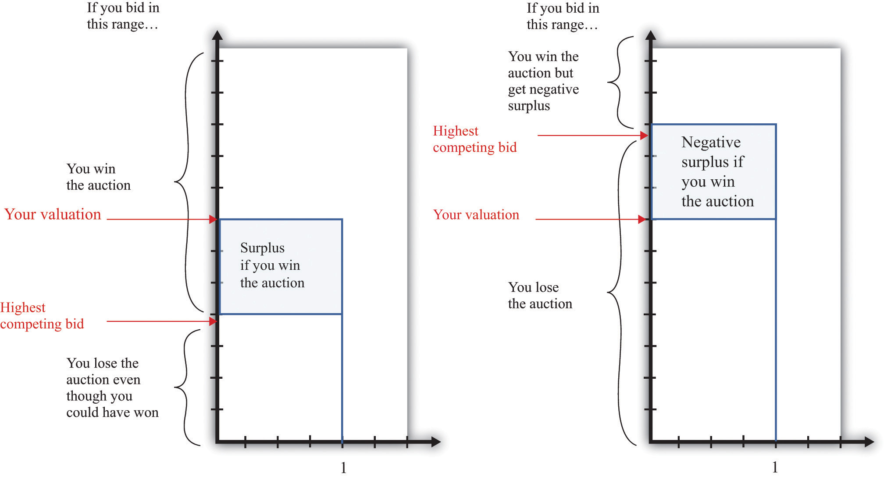
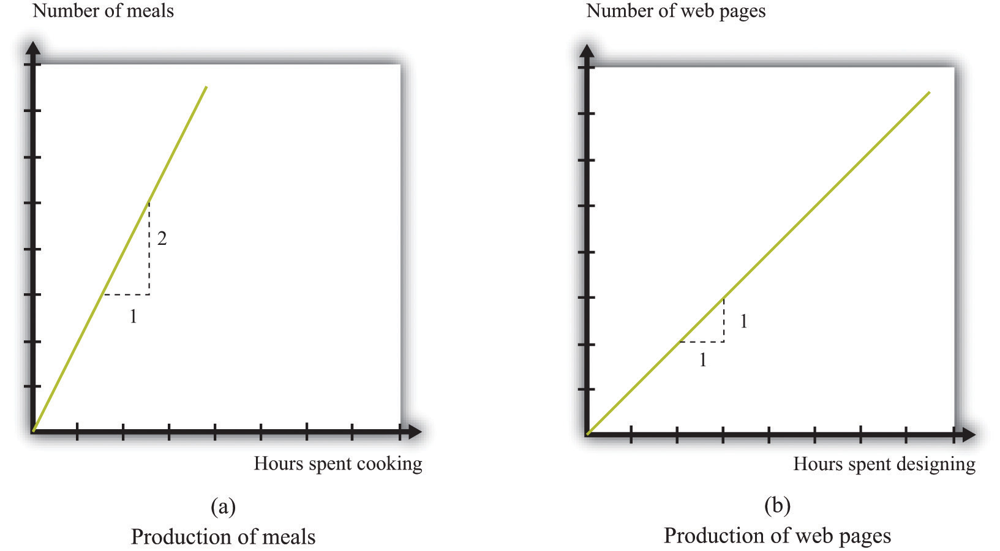
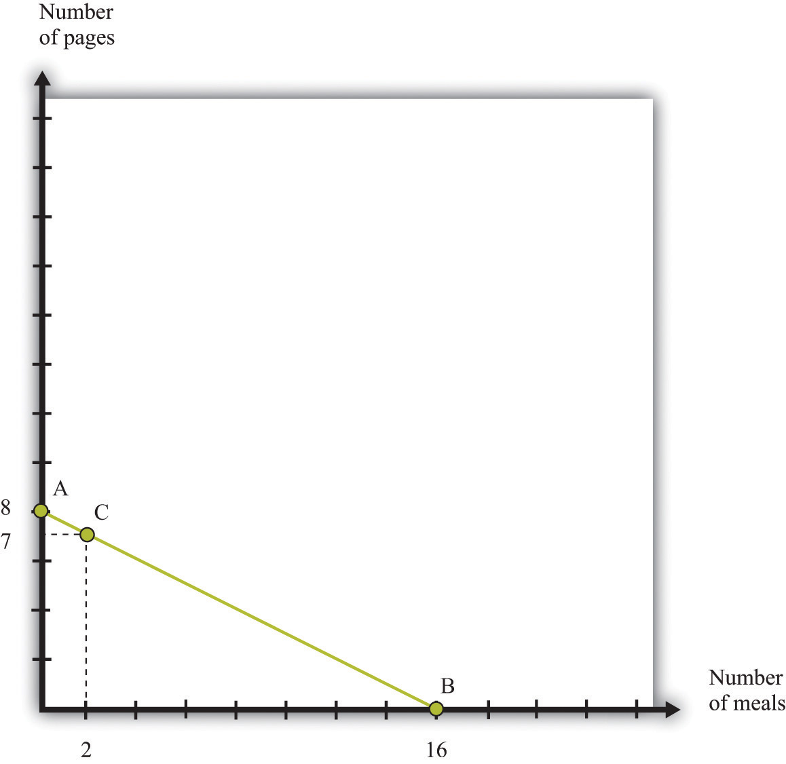
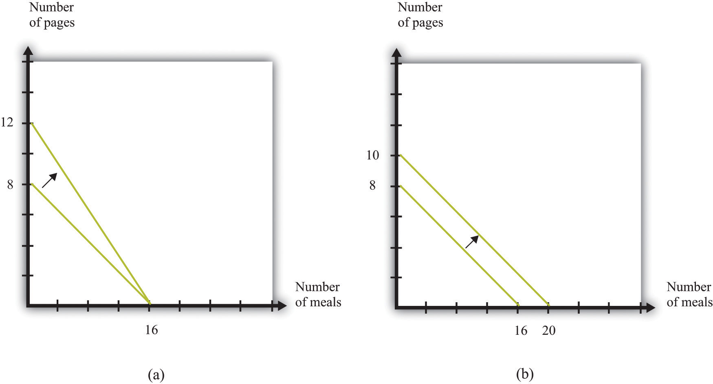
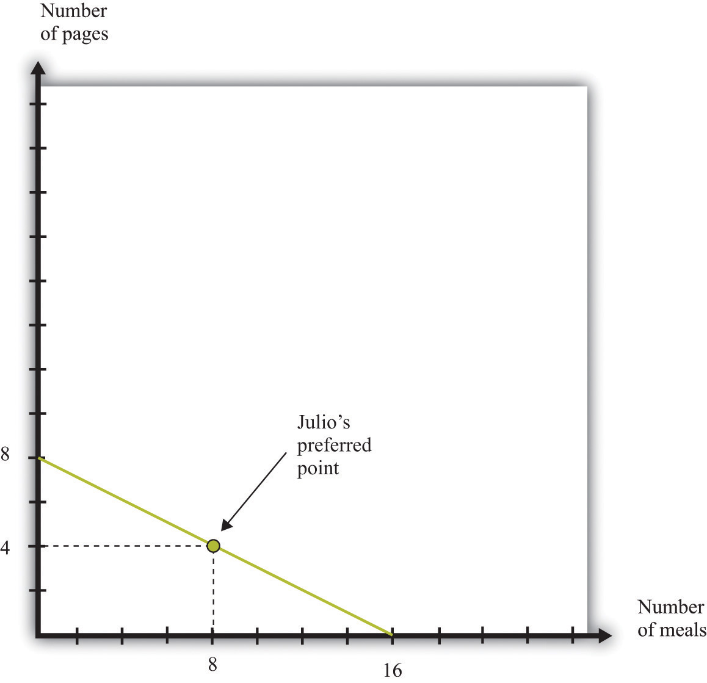
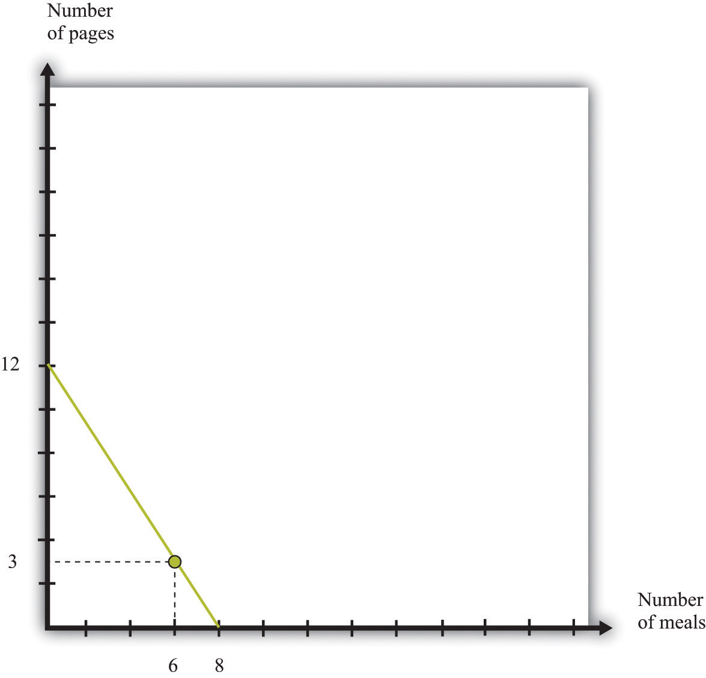
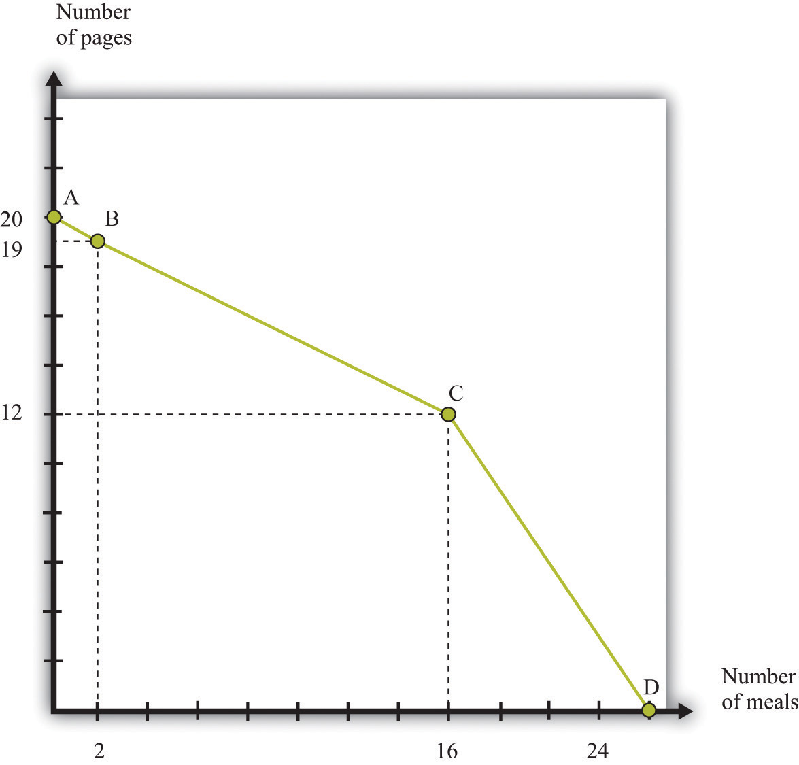
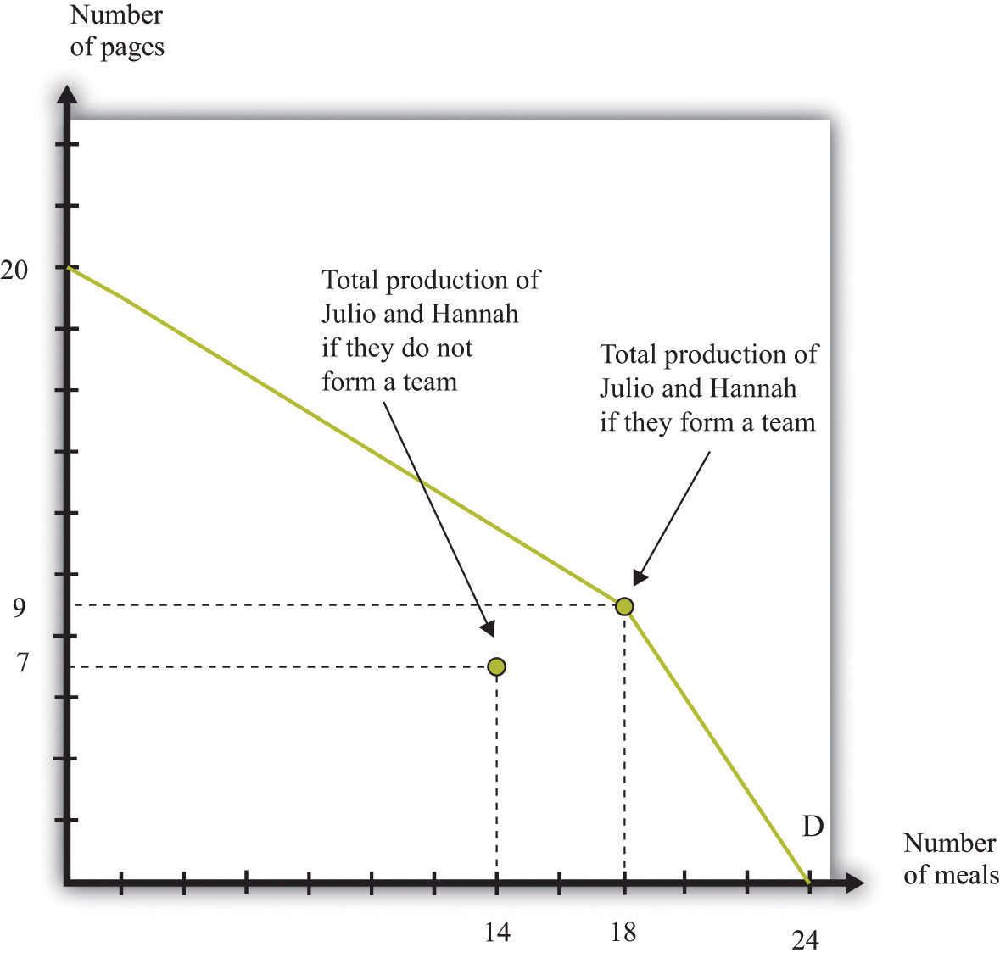
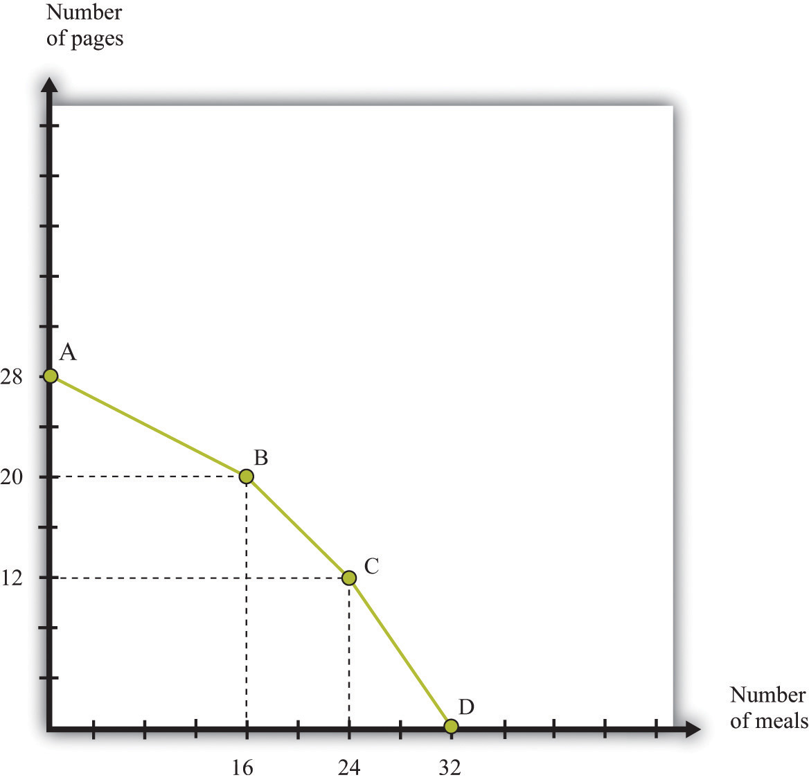
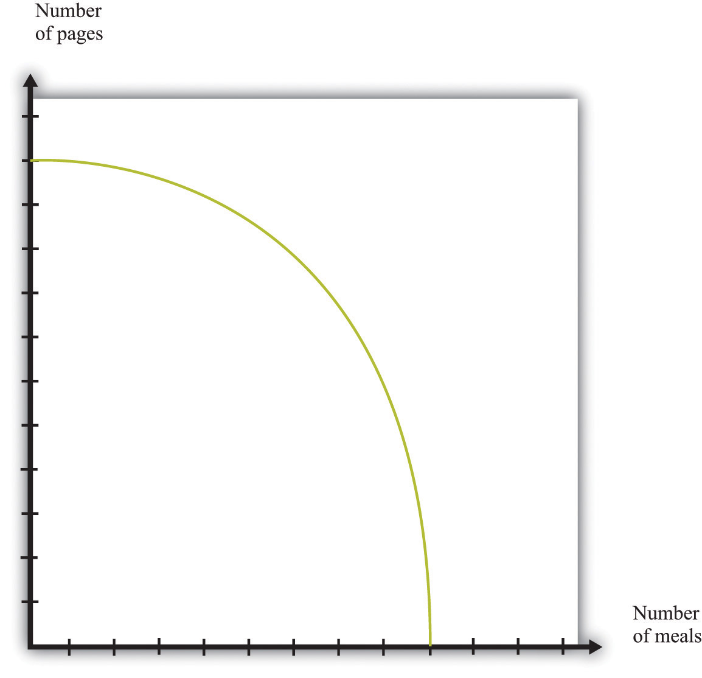

eBay is one of the most famous sites on the Internet (http://www.ebay.com; Figure 6.1 "The eBay Home Page"). It was founded in 1995 and is now a very large company, with $60 billion in sales in 2009 and over 90 million active users worldwide.See eBay Inc., “Who We Are,” accessed February 24, 2011, http://www.ebayinc.com/who. One of the many ways in which the Internet is changing the world is that there are now ways of buying and selling—such as eBay—that were completely unavailable to people 20 years ago.
Figure 6.1 The eBay Home Page
In or around the second and third centuries BCE, the island of Delos, in Greece, was a major center of trade—both of goods and slaves. At its height of activity, Delos, an island of five square kilometers, had a population of about 25,000 people.MyKonos Web, “History of Delos,” accessed January 25, 2011, http://www.mykonos-web.com/mykonos/delos_history.htm. This means Delos was about as densely populated as modern-day cities such as Istanbul, London, Chicago, Rio de Janeiro, or Vancouver. Visitors today see different things when they visit the ruins of Delos. Some see dusty pieces of shattered rock; others see the remains of a great culture. An economist sees the ruins of a trading center: a place where people such as the trader shown in Figure 6.2 "A Trader in Delos" were, in a sense, the eBay of their times.
Figure 6.2 A Trader in Delos
Delos and eBay are separated by almost two and a half millennia of history, yet both are founded on a basic human activity: the trading of goods and services. How basic? Consider the following.
Trade has played a central role in determining where many of us live today.
Much of economics is about how we interact with each other. We are not alone in the economic world. We buy goods and services from firms, retailers, and each other. We likewise sell goods and services, most notably our labor time. In this chapter, we investigate different kinds of economic interactions and answer two of the most fundamental questions of economics:
The chapter falls naturally into two parts corresponding to these two questions. We begin by thinking about the ways in which individuals exchange goods and services.
In modern economies, most trade is highly disintermediated. You usually don’t buy a good from its producer. Perhaps the producer sells the good to a retail store that then sells to you. Or perhaps the good is first sold to a wholesaler who then sells to a retailer who then sells to you. Goods are often bought and sold many times before you get the opportunity to buy them.Such transactions are the focus in Chapter 7 "Where Do Prices Come From?" and Chapter 8 "Why Do Prices Change?". For the moment, however, we have a different emphasis. We do not yet get into the details of retailing in the economy but instead focus on trade among individuals—the kind of transaction that you can carry out on eBay and craigslist.
Specifically, we want to understand how potential buyers and sellers are matched up. We also want to know what determines the prices at which people exchange goods and services. Broadly speaking, prices can be established in the following ways.
Take-it-or-leave-it offers are the most common form of price-setting in retail markets. The prices displayed in your local supermarket can be thought of as thousands of take-it-or-leave-it offers that the supermarket makes to you and other shoppers. Whenever you go to the supermarket, you reject most of these offers (meaning you don’t buy most of the goods on display), but you accept some of them. Take-it-or-leave-it offers also occur when individuals trade. Classified advertisements in newspapers or on Internet sites like craigslist typically involve take-it-or-leave-it offers.
Once we understand how individuals trade with one another, we turn to an even more basic question: why do we trade? Whether we are talking about first graders swapping Pokémon cards, the purchase of a camera on eBay, the auction of a Renoir painting at Sotheby’s, or traders in the Mediterranean islands over two millennia ago, there is one reason for trade: I have something you want, and you have something I want. (In many cases, one of these “somethings” is money. Keep in mind, though, that people don’t want money for its own sake; they want money to buy goods and services.)
We therefore explain how differences in what we have and what we want provide a motive for trade and how such trade creates value in the economy. Then we go deeper. In a modern economy, trade is an essential part of life. We consume a large number of goods and services, but we play a role in the production of very few. Put differently, modern economies exhibit a great deal of specialization. We carefully investigate how specialization lies right at the heart of the gains from trade.
To begin our investigation of why and how we trade, let us examine craigslist (http://www.craigslist.org), an Internet site devoted to exchange. The craigslist site is very similar to the classified advertisements in a newspaper except that the advertisements are online. It is local, in the sense that there is a different site for different places. You can find craigslist sites for cities and states throughout the United States, and—at the time of this writing—for 14 cities and 54 countries around the world. If you visit the craigslist website, you will see there are many types of goods and services listed. For now, we focus on the purchase of a good. Later, we will consider the purchase and even the exchange of services.
Pricing on craigslist commonly takes a take-it-or-leave-it form. The seller posts a price and then buyers and sellers communicate through (anonymous) e-mails. Of course, the buyer always has the option of trying to turn this take-it-or-leave-it scenario into back-and-forth bargaining by making a counteroffer. Once they have agreed to trade, the buyer and seller must find a way to consummate the transaction—delivering the good and making payment.
Suppose you are interested in buying a car. You go to craigslist in your area and search through offers to sell cars. These offers typically provide lots of information about the product, usually including photos and a price. If you want to inquire about a particular car, you can contact the seller. If you want to buy the car, you can accept the seller’s offer. If you want to negotiate, you can do so as well. To get at the heart of this kind of exchange, let us first take a simple case where there is a single seller and a single buyer.
Economists generally think that individuals make decisions in their own self-interests. If a seller is willing to sell a good at a given price, and a buyer is willing to buy at that price, our presumption is that this exchange makes them both better off. This deceptively simple idea is the very heart of economics: voluntary trade makes both participants better off. The word voluntary matters here. We are supposing that both people freely enter into this trade. If two people make a deal of their own free will and if they are rational, in the sense that they can make decisions in their own best interests, then the deal must make them both better off.
The demand for a car is an example of a unit demand curve because you are deciding whether or not to buy at all rather than how much you should buy.See Chapter 4 "Everyday Decisions" for more discussion. The buyer has a valuation for the good, which represents the most he would be willing to pay for it. For example, suppose you see a used car on craigslist, and your valuation of this car is $3,000. This means that you would be equally happy either having the car and forfeiting $3,000 worth of other goods and services or not having the car. Figure 6.3 "The Buyer’s Valuation" shows what your demand curve looks like in this case. You are choosing to buy either zero units or one unit, so if the price is above your valuation, you do not buy the good, whereas if the price is below your valuation, you buy the car.
Toolkit: Section 31.1 "Individual Demand"
You can review unit demand and valuation in the toolkit.
Figure 6.3 The Buyer’s Valuation

The buyer follows the decision rule: “Buy if the price is less than the valuation.”
If your valuation were $3,000, then you would, of course, prefer to pay much less. If the car is for sale for $2,990, then it is true that you would be better off buying the car than not, but you won’t get much out of the deal. You would be happier only to the tune of $10 (more precisely, $10 worth of goods and services). If the car is for sale for $2,400, then you will be happier by an amount equivalent to $600 worth of goods and services. On the other hand, if the car were for sale for $3,001, you definitely would not want to buy at that price. Buying the car would actually make you slightly less happy.
The seller also has a valuation of the car. The seller is not willing to sell it at any price. For example, if her valuation is $2,000, she is equally happy keeping the car or not having the car and having an extra $2,000 worth of goods and services. If she can sell the car for more than $2,000, she will be better off. She won’t sell the car for less than $2,000 because then she would be less happy than before. We can show the seller’s willingness to sell in a way analogous to the buyer’s willingness to buy. Figure 6.4 "The Seller’s Valuation" shows that she will not sell the car at a price less than $2,000, but she will sell once the price is greater than $2,000.
By analogy to unit demand, we call this the unit supply curveA supply curve in which the buyer sells either zero units or one unit of a good but no more than one unit.. It tells us the price at which she is willing to sell. Below her valuation, she is unwilling to supply to the market. Above her valuation, she is willing to sell the good. Whereas the buyer’s valuation is the absolute maximum that the buyer is willing to pay, the seller’s valuation is the absolute minimum that the seller is willing to accept.
Figure 6.4 The Seller’s Valuation

The seller follows the decision rule: “Sell if the price is greater than the valuation.”
The buyer’s valuation in our example is larger than the seller’s valuation. This means it is possible to make both the buyer and the seller better off. The mere fact of transferring a good from someone who values it less to someone who values it more is an act that creates value in the economy. We say that there are gains from trade available here.
Toolkit: Section 31.10 "Buyer Surplus and Seller Surplus"
Total surplus is a measure of the gains from trade. In a single transaction,
total surplus = buyer’s valuation − seller’s valuation.In this example, therefore, the total surplusA measure of the gains from trade, equal to the buyer’s valuation minus the seller’s valuation. is $1,000. This is the value created in the economy by the simple fact of transferring the car from a seller who values it less to a buyer who values it more. Figure 6.5 "Buyer and Seller Valuations" shows this graphically by combining the unit demand curve and the unit supply curve.
Figure 6.5 Buyer and Seller Valuations

The total surplus from a transaction is equal to the buyer’s valuation minus the seller’s valuation. Graphically, total surplus can be represented as a rectangle. The height of the rectangle is the difference in the valuations. The base of the rectangle is 1 because only one unit is being traded.
The buyer wants the price to be as low as possible, whereas the seller wants the price to be as high as possible. If both agree on a price of $2,100, for example, the buyer gets most of the surplus, and the seller does not get very much. If they agree on a price of $2,900, the situation is reversed: most of the benefit goes to the seller. The distribution of the value created depends on the price. Either way, though, they are both made better off by the trade, and in both cases the total surplus is the same (Figure 6.6 "The Distribution of Total Surplus").
Toolkit: Section 31.10 "Buyer Surplus and Seller Surplus"
The buyer surplus is a measure of how much the buyer gains from a transaction, and the seller surplus is a measure of how much the seller gains from a transaction:
buyer surplus = buyer’s valuation − priceand
seller surplus = price − seller’s valuation.The total surplus is the sum of the buyer surplus and the seller surplus.
Figure 6.6 The Distribution of Total Surplus

The distribution of surplus between the buyer and the seller depends on the price. A low price means that the buyer will get most of the surplus, while a high price means that the seller will get most of the surplus. The total surplus, however, is the same no matter what the price.
When the buyer purchases the car from the seller, there is a reallocation of society’s resources. Dollars have gone from the buyer to the seller, and the car has gone from the seller to the buyer. Economists have developed a specific criterion, called efficiencyThe basis that economists use for judging the allocation of resources in an economy., for evaluating the way in which resources are allocated in a society.
It is actually easier to understand efficiency by looking at its opposite. Economists say that an allocation of resources is inefficient if there is some way to reallocate those resources that will make some people better off (that is, happier) without making anyone else worse off. For example, think about the situation where the buyer and seller have not traded the car. This allocation is inefficient. The buyer places a greater value on the car than does the seller, so it is inefficient for the car to remain with the seller. Any rearrangement of resources that makes some people better off without making anyone else worse off is welfare improving.
Toolkit: Section 31.11 "Efficiency and Deadweight Loss"
Efficiency is the basis that economists use for judging the allocation of resources in an economy. Resources are allocated efficiently if there is no way to reallocate them to make someone better off without making anybody else worse off.
Before the buyer and the seller trade, the allocation of resources is inefficient. However, there are many different trades that make both the buyer and the seller better off. In fact, any trade between a price of $2,000 and a price of $3,000 is welfare improving. The only thing that matters for economic efficiency is that a trade takes place, so the gains from tradeThe total surplus from a trade. can be realized. No matter how the surplus is distributed between the buyer and the seller, the outcome is efficient as long as the trade occurs.
We now know that as long as the buyer’s valuation for a good exceeds the seller’s valuation, there are potential gains from trade. We have not yet explored the mechanisms that allow trade to occur, nor have we explained what determines the price at which trades occur. To begin with, we ignore the possibility of bargaining. Then there are only two steps for selling an item on craigslist:
If the buyer accepts the seller’s offer, then an exchange is made. But what offer will the seller make? The answer depends on how much the seller knows about the buyer’s valuation of the good. There are two cases to consider:
The knowledge of the buyer also matters. Suppose that the buyer knows the seller’s valuation. Then he knows that there are possible gains from trade. In this case, it is natural to think that the buyer will try to negotiate with the seller, rather than just accept or reject the seller’s offer. Indeed, if the buyer knows the seller’s valuation, then we have the reverse of the first case. If the buyer offers a price slightly above the seller’s valuation, then the buyer should be able to capture the entire surplus. We summarize this in Figure 6.7 "The Outcomes from a Take-It-or-Leave-It Offer".
In practice, the buyer is also likely to try to negotiate if the seller’s price leaves the buyer with very little surplus. Thus even though craigslist is apparently based on take-it-or-leave-it offers, a great deal of bargaining does in fact take place.
Figure 6.7 The Outcomes from a Take-It-or-Leave-It Offer

So far we have supposed that there is only a single buyer and a single seller. If you are thinking about selling a good on craigslist, however, there are many potential buyers of your good. In addition, you probably don’t know very much about the valuations of the different buyers. You might then like to find some way to make your buyers compete with each other. In other words, you might consider auctioning off the good instead.
You have probably at least visited the eBay site, and you may even have bought or sold an item on eBay. If so, you know it can be a convenient and efficient way to buy and sell goods. But what exactly is eBay? We answer this question by looking at the site from the perspective of participants. First we review how eBay works and look at it from the point of view of both a buyer and a seller. Then we bring some economic analysis to bear to better understand what is taking place on eBay and in other auctions.
Suppose you want to purchase something, such as a leather jacket, some cycling gloves, or a cell phone; the list of things that might interest you is endless. On the eBay page, you can search for the exact item you want to buy. Your search must be specific: if you search for “cell phone,” you will find thousands of products. You need to know the exact model of phone you want, and even then you may find multiple items for sale.
Auctions on eBay have several characteristics, including the identity of the seller, the time limit on the auction, the acceptable means of payment, the means of delivery, and the reserve price.
You participate as a buyer in an eBay auction by placing a bid. For some products, you also have an option of clicking “Buy It Now,” where you can purchase the good immediately. In other words, sellers sometimes make a take-it-or-leave it offer as well as offer an auction. To understand the details of the bidding process, look first at the description of how to bid on eBay:
Once you find an item you’re interested in, it’s easy to place a bid. Here’s how:
You’ll get an email confirming your bid. At the end of the listing, you’ll receive another email indicating whether you’ve won the item with an explanation of next steps.eBay Inc., “Help: How to Bid,” accessed March 14, 2011, http://pages.ebay.com/help/new/contextual/bid.html.
Because participants in an eBay auction are not all present to bid at the same time, eBay bids for you. All you have to do is to tell it how much you are willing to pay, and eBay takes over. This is known as “proxy bidding” or “automatic bidding.”
The exact way in which eBay bids for you is not transparent from this description. It works as follows. Once you input your maximum bid, eBay compares this to the highest existing bid. If your maximum bid is higher than the existing highest bid, then eBay raises the bid by an increment on your behalf. Unless someone bids more, you will win the auction. If someone does bid more (the maximum bid exceeds the highest bid), then you, by proxy, will respond. In this way, the highest bid increases. This process ends with the item going to the bidder with the highest maximum bid. However, the buyer does not pay the amount of the maximum bid. The buyer pays the amount of the next highest bid, plus the increment.
Let us see how this works through an example. Suppose there are two buyers who put in maximum bids of $100 and $120 for a cell phone. Suppose that the increment is $1 and the bidding starts at $50. Because the maximum bids exceed $50, the highest bid will increase by increments of $1 until reaching $100. At this point, the higher of the two maximums, $120, will cause the highest bid to increase by another increment to $101. After this, there is no further action: the other bidder effectively drops out of the auction. The item goes to the buyer who bid $120, and he pays a price of $101 (provided this exceeds the seller’s reserve price).
Now that you understand how the auction works, you must decide how to bid. Suppose there is only one auction for the good you want (rather than multiple sellers of similar goods). In this case, there is a remarkably simple decision rule to guide your bidding.
This seems surprising. Your first reaction might well be that it is better to bid less than your valuation. But here is the key insight: the amount you actually pay if you win the auction doesn’t depend on your bid. Your bid merely determines whether or not you win the auction.
If you pursue this strategy and win the auction, you will gain some surplus: the amount you pay will be less than the valuation you place on the good. If you don’t win the auction, you get nothing. So winning the auction is better than not winning. If you bid more than your valuation, then there is a chance that you will have to pay more than your valuation. In particular, if the second-highest bidder puts in a bid that exceeds your valuation, then you will lose surplus. So this does not seem like a good strategy. Finally, if you bid less than your valuation, there is a chance that you won’t win the auction even though you value the good more highly than anyone else. Therefore, you will lose the chance of getting some surplus. This is also not a good strategy.
Figure 6.8 "Why You Should Bid Your Valuation in an eBay Auction" illustrates one way of thinking about this. There are two possibilities: either your valuation is bigger than the highest competing bid or your valuation is smaller than the highest competing bid. We don’t have to know anything about how other bidders are making their decisions. Part (a) of Figure 6.8 "Why You Should Bid Your Valuation in an eBay Auction" shows the first case. Here, there is a risk that you will lose out on surplus that you could have received. If you bid below the competing bid, you will lose the auction and hence lose out on the surplus. The surplus is the difference between your valuation and the competing bid, minus the increment.
Figure 6.8 Why You Should Bid Your Valuation in an eBay Auction
These illustrations show why you should always bid your valuation on eBay.
Part (b) of Figure 6.8 "Why You Should Bid Your Valuation in an eBay Auction" shows the case where your valuation is less than the competing bid. Here the risk is that you will win the auction and then regret it. If you bid an amount greater than the competing bid, then you will win the auction, but the amount you will have to pay exceeds your valuation. Your loss is the difference between the competing bid and your valuation, plus the increment.
Although automatic bidding by proxy sounds very fancy, the eBay auction is really the same as “English auctions” that are familiar from television and movies. In an English auction, an auctioneer stands at the front of the room and invites bids. Bidding increases in increments until all but one bidder drops out. The winning bidder pays the amount of his bid. The winning bidder therefore pays an amount equal to the highest competing bid, plus the increment, just as in the eBay auction. The amount that she wins is her valuation minus the price she pays, just as in the eBay auction.
The bidding in an English auction can be exciting to watch; you can also have the excitement of seeing how bids evolve on eBay (at least if you are willing to keep logging on and hitting the “refresh” button). But we could also imagine that eBay could do something simpler. It could carry out a “Vickrey auction,” which is named after its inventor, the Nobel-prize-winning economist William Vickrey. In a Vickrey auction, the auctioneer (1) collects all the bids, (2) awards victory in the auction to the highest bidder, and (3) makes this person pay an amount equal to the second-highest bid.
The Vickrey auction sometimes goes by the more technical name of a second-price sealed-bid auctionAn auction in which all bidders submit a single secret bid to the auctioneer, the winner is the person who submits the highest bid, and the winner pays an amount equal to the second-highest bid.. Most people think this kind of auction sounds very odd when they first hear of it. Why make the winner pay the second-highest bid? Yet it is almost exactly the same as the eBay auction or the English auction. In those auctions, as in the Vickrey auction, the winner is the person with the highest bid, and the winner pays the amount of the second-highest bid (plus the increment). The only difference is that there is no increment in the Vickrey auction; because the increment is typically a very small sum of money, this is a minor detail.
Sellers on eBay typically provide information on the product being sold. This is often done by creating a small web page that describes the object and includes a photograph. Sellers also pay a listing fee to eBay for the right to sell products. They also specify the costs for shipping and handling. After the sale is completed, the buyer and the seller communicate about the shipping, and the buyer makes a payment. Then the seller ships the product, pays eBay for the right to sell, and pockets the remainder.
As we mentioned previously, the buyer can provide feedback on the transaction with the seller. This feedback is important to the seller because transactions require some trust. A seller who has built a reputation for honesty will be able to sell more items, potentially at a higher price.
As an individual participating in an auction, you have two concerns: (1) whether or not you win and (2) how much you have to pay. As economists observing from outside, there are other perspectives. Auctions play a very valuable role in the economy. They represent a leading way in which goods are bought and sold—that is, they represent a mechanism for trade.
As we have already stated, voluntary trade is a good thing because it creates value in the economy. Every transaction allows a good or service to be transferred from someone who values it less to someone who values it more. The English auction, such as on eBay, is attractive to economists because it does something more. It ensures that the good or the service goes to the person who values it the most—that is, it ensures that the outcome is efficient. It also has the fascinating feature that it induces people to reveal their valuations through their bids.
eBay is just one example of the many auctions you could participate in. There are auctions for all types of goods: treasury securities, art, houses, the right to broadcast in certain ranges of the electromagnetic spectrum, and countless others. These auctions differ not only in terms of the goods traded but also in their rules. For example, firms competing for a contract to improve a local road may submit sealed bids, with the contract going to the lowest bidder to minimize the costs of the project. Of course, other elements of the bid, including the reputation of the bidder, may also be taken into account.
The eBay auction sounds almost too good to be true. It is easy to understand, brings forth honest bids, and allocates the good to the person who values it the most. Are there any problems with this rosy picture?
Suppose you have a video-game system for sale. You can put it up for auction on eBay, but you must be aware that many other people could be listing the identical item. What will happen?
First, your potential buyers will most likely look (and bid) at multiple auctions, not only your auction. Second, potential buyers will not be eager to bid in your auction. After all, if they don’t win your auction, they can always hope for better luck in another auction. It follows that buyers may decide it is no longer such a good strategy to bid their valuations. Buyers who bid their valuations might end up paying a high price if they win an auction where someone else placed a relatively high bid. Such buyers might be more successful taking the chance of losing one auction and winning another in which the bidding is lower. As buyers monitor other auctions, they will also start to get a sense of how much other people are willing to pay and will adjust their bidding accordingly.
Unfortunately, we can’t give you such simple advice about what to do as a buyer in these circumstances. It is not easy to develop the best bidding strategy. In fact, problems like this can be so hard that even expert auction theorists have not fully worked them out.
Another concern is that bidders might want to find some way to collude. As a simple example, suppose there are three bidders for a good with an increment of $1. One bidder has a valuation of $50, one has a valuation of $99, and one has a valuation of $100. In an eBay auction, the winning bid would be $100, but the winner would end up with no surplus (because he would pay $99 plus the $1 increment). Now suppose that the two high-value bidders make an agreement. As soon as the third bidder drops out, they toss a coin. If it comes up heads, Mr. $99 drops out. If it comes up tails, Ms. $100 drops out.
This means that with 50 percent probability, Ms. $100 wins, pays $51, and gets a surplus of $49. With 50 percent probability Mr. $99 wins, pays $51, and gets a surplus of $48. Both buyers prefer this. It’s certainly better for Mr. $99, who had no chance of winning before. It is also better for Ms. $100 because even though she may no longer win the auction, she stands to get some surplus if she does win. Of course, the seller wouldn’t like this arrangement at all. And the dispassionate economist observing from afar doesn’t like it either because sometimes the good may not go to the person who values it the most.
Explicit collusion of this type may very well be illegal, and it is also very hard to carry out. Yet it may be possible for buyers to collude indirectly, and there is speculation that such collusion is sometimes observed on eBay.
We have been supposing throughout that potential buyers know their own valuations of the good being auctioned. In most circumstances, this seems reasonable. Valuations are typically a personal matter that depend on the tastes of the individual buyer.
Occasionally, however, a good with an objective monetary value that is unknown to potential buyers may be auctioned. A classic example is the drilling rights to an oilfield. There is a certain amount of oil in the ground, and it will earn a certain price on the market. However, bidders do not know these values in advance and must make their best guess.
It is easiest to see what can happen here with a numerical example. Suppose the true (but unknown) value of an oilfield is $100 million. Suppose there are five bidders, whose guesses as to the value of the oilfield are summarized in Table 6.1 "Valuations of Different Bidders in a Winner’s Curse Auction". Notice that these bidders are right on average, but two overestimate the value of the field, and two underestimate it. Imagine that the bidders decide to follow the strategy that we recommended earlier and bid up to their best guess. Bidder E will win. He will have to pay the second-highest bid of $105 million, which is more than the oilfield is worth. He will lose $5 million.
Table 6.1 Valuations of Different Bidders in a Winner’s Curse Auction
| Bidder A | Bidder B | Bidder C | Bidder D | Bidder E | |
|---|---|---|---|---|---|
| Valuation ($ million) | 90 | 95 | 100 | 105 | 110 |
The problem here is that the person who will win the auction is the person who makes the worst overestimate of the value of the field. Evidently it is not a good strategy in this auction to bid your best guess. You should recognize that your best guess may be inaccurate, and if you overestimate badly, you may win the auction but lose money. This phenomenon is known as the winner’s curseThe idea that the winner of an auction may end up paying more than the good is actually worth because the true value of the good is unknown to the bidders.. Your best strategy is therefore to bid less than you actually think the oilfield is worth. But how much less should you bid? That, unfortunately, is a very hard question for which there is no simple answer. It depends on how accurate you think your guess is likely to be and how accurate you think other bidders’ guesses will be.
An auction mechanism such as eBay is a natural thing for a seller to use if there are a large number of potential buyers for a good. But what happens if there is also a large number of potential sellers? In this section, we consider what might happen when we have a large number of potential buyers and a large number of potential sellers of a good.
We have already explained that it is very difficult to analyze what would happen on eBay when there are multiple buyers and sellers, but we can make a better guess about what will happen on a site like craigslist. As a buyer, you will look for the lowest price out there, bargain with sellers who post high prices, or both. As a seller, you would look at the prices posted by others and realize that you probably should set your price fairly close to those prices. In addition, we have some evidence that can help us understand the likely outcome in a world of many buyers and many sellers. It comes from looking at “double oral auctions.” “Double” refers to the fact that there are a large number of buyers and sellers. “Oral” refers to the way in which the auction is conducted.
In a double oral auctionA large number of buyers and sellers, each with potentially a different valuation of a good, negotiate with each other, one on one, to try to get a better deal., there is a large number of buyers, each of whom potentially has a different valuation of the good. There is also a large number of sellers, each of whom potentially has a different valuation of the good. Buyers and sellers negotiate with each other, one on one. If they cannot agree to a deal, either party can move on at any time and try to find someone else to bargain with.
Until quite recently, auctions such as this were common in many financial markets and commodity markets. These markets sometimes go by the name pit markets because buyers and sellers meet in a frenzy of activity in a trading area called the pit. Traders can hear and see the negotiations of others and often have access to the prices at which deals have been done. This means that both buyers and sellers have lots of information about what price is prevailing in the market.Chapter 10 "Making and Losing Money on Wall Street" has much more to say about these markets.
Economists have also conducted experiments in which they have put people in simulated pit markets to find out how they behave. The result is quite remarkable, but before we explain what happens, we need a framework to help us think about such markets.
Suppose we are considering the purchase of a gaming console by a group of buyers. Each potential buyer has his own valuation. Some might be willing to pay as much as $700. Others might be willing to spend much less. After all, how much you are willing to pay for a gaming console depends on your income, how much you like playing, what equipment you currently own, and so on.
Each potential buyer has a unit demand curve like the one we saw in Figure 6.3 "The Buyer’s Valuation". We can add these unit demand curves together to get a picture of demand in the entire market: the market demand curveThe number of units of a good or a service demanded at each price.. For example, suppose only one person is willing to buy if the price is $700. However, suppose there is another buyer with a valuation of $660. If consoles were on sale for $660, then both individuals would want to purchase. At $660, in other words, the quantity demanded is 2. Perhaps the buyer with the next-highest valuation is willing to pay $640. If the price is $640, the quantity demanded is 3. Figure 6.10 "Obtaining the Market Demand Curve" shows what happens when we add together all these unit demand curves. The result is a downward sloping relationship that shows us how many units would be demanded at any given price.
Toolkit: Section 31.9 "Supply and Demand"
The market demand curve tells us how many units of a good or a service will be demanded at any given price. The market demand curve is obtained by adding together the individual demand curves in the economy and obeys the law of demand: as the price decreases, the quantity demanded increases.
Figure 6.10 Obtaining the Market Demand Curve

We can add together the unit demand curves of different individuals in the economy to get the market demand curve.
We saw earlier that each potential seller has a unit supply curve. If the price is less than a seller’s valuation, she will not sell the good, but when the price becomes greater than her valuation, she will be willing to sell. Just as we added together the unit demand curves to get the market demand curve, so too can we add together the unit supply curves to get the market supply curveThe number of units of a good or a service supplied at each price..
Toolkit: Section 31.9 "Supply and Demand"
The market supply curve tells us how many units of a good or a service will be supplied at any given price. The market supply curve is obtained by adding together the individual supply curves in the economy and typically slopes upward: as the price increases, the quantity supplied to the market increases.
In Figure 6.11 "Obtaining the Market Supply Curve", we see that the lowest valuation in the market is $150. There is one seller willing to sell a console at that price. As the price increases, more and more sellers will find the price attractive and will want to sell. For example, there are 11 potential sellers with a valuation less than $350. Thus, at this price, 11 consoles will be supplied to the market.
Figure 6.11 Obtaining the Market Supply Curve

We can add together the unit supply curves of different individuals in an economy to get the market supply curve.
Figure 6.10 "Obtaining the Market Demand Curve" and Figure 6.11 "Obtaining the Market Supply Curve" tell us the number of buyers willing to buy and the number of sellers willing to sell at each price.
Figure 6.12 "Market Equilibrium" shows what happens if we combine the demand curve and the supply curve on the same diagram. One point jumps out at us: the place where the demand and supply curves meet. In our example, this is at $480 and a quantity of 21 units. At this point, the number of buyers with a valuation greater than the price is the number of sellers with a valuation less than the price. If buyers and sellers were presented with this price, none would find themselves unable to transact. At this price, there is an exact match between the number of buyers and sellers.
Figure 6.12 Market Equilibrium

In this figure, we combine the demand and supply curves to find the equilibrium price and quantity in the market.
Toolkit: Section 31.9 "Supply and Demand"
Equilibrium in a market refers to an equilibrium price and an equilibrium quantity and has the following features:
EquilibriumThe equilibrium price and the equilibrium quantity in a market. is not only a point on a graph. It is a prediction about a possible outcome in a situation where a large number of buyers and sellers meet with the possibility of trading. It seems plausible that in a situation where a large number of buyers and sellers can meet and trade with each other, most will end up trading at or near the equilibrium priceThe price at which sellers supply the equilibrium quantity and buyers demand the equilibrium quantity..
The equilibrium outcome is plausible because, at any other price, there will be a mismatch of buyers and sellers. Imagine, by contrast, that the buyers and sellers of our example are currently trading at $600, well above the equilibrium price of $480. At this high price, many more people want to sell than want to buy. Buyers would rapidly realize that they are in a strong bargaining position: if many sellers want your business, you can make them compete with each other and force price decreases. In fact, whenever the price is above equilibrium, the mismatch of buyers and sellers will tend to decrease prices.
By similar reasoning, a price of, say, $400 would also result in a mismatch between buyers and sellers. In this case, though, there are more people who want to buy than sell. Sellers can make buyers compete with each other, leading to price increases. At any price below the equilibrium price, prices will tend to increase.
Economists formalize the intuition we have just developed with the most famous framework in all of economics: supply and demand.The definition is repeated and discussed in more detail in Chapter 8 "Why Do Prices Change?"; we make extensive use of it in other chapters.
Toolkit: Section 31.9 "Supply and Demand"
Supply and demand is a framework we use to explain and predict the equilibrium price and quantity of a good. This framework illustrates the willingness to sell (market supply) and buy (market demand) on a graph with price on the vertical axis and units of the good or the service on the horizontal axis. A point on the market supply curve shows the quantity that suppliers are willing to sell for a given price. A point on the market demand curve shows the quantity that demanders are willing to buy for a given price. The intersection of supply and demand determines the equilibrium price and quantity that will prevail in the market. A basic supply-and-demand framework is shown in Figure 6.13 "Supply and Demand".
Figure 6.13 Supply and Demand

When we have a large number of buyers and sellers of an identical good or service, the equilibrium price and quantity are determined by the intersection of the supply and demand curves.
The position of the demand curve depends on many things, such as income and the prices of other goods. A change in any of these will cause the entire demand curve to shift. Likewise, the position of the supply curve depends on factors such as a supplier’s costs. A change in these will cause the entire supply curve to shift. When one (or both) of the curves shifts, the equilibrium price and quantity change.
Experience with double oral auctions, both in the laboratory and in actual pit markets, tells us that trading will typically settle down close to the equilibrium price within a relatively short period of time. In a situation where there is a large number of people buying and selling an identical good, we say that we have a competitive marketA market that satisfies two conditions: (1) there are many buyers and sellers, and (2) the goods the sellers produce are perfect substitutes.. We expect that most trades will take place at or close to the equilibrium price, and the quantity traded will be approximately equal to the equilibrium quantityThe quantity where the supply and demand curves intersect, so the quantity supplied equals the quantity demanded.. In fact, even when the number of participants in the auction is relatively small, we often find that a double oral auction still gets close to this equilibrium price and quantity. This is the remarkable finding that we mentioned earlier: in a double oral auction, the number of transactions and the prices of these transactions are usually very close to the equilibrium predicted by supply and demandA framework that explains and predicts the equilibrium price and equilibrium quantity of a good..
Toolkit: Section 31.9 "Supply and Demand"
Suppose a market has the following two characteristics:
In this case we say that we have a competitive market (sometimes called a perfectly competitive market). Buyers and sellers both take the price as given. This means that they think their actions have no effect on the price in the market, which in turn means we can employ the supply-and-demand framework.
Suppose all the transactions in Figure 6.12 "Market Equilibrium" take place at the equilibrium price of $480. What can we say about the surplus received by buyers and sellers? Each individual transaction looks like those we examined in Chapter 6 "eBay and craigslist", Section 6.2 "eBay". The total surplus from any given transaction is equal to the difference between the buyer’s valuation and the seller’s valuation. The buyer surplusA measure of how much the buyer gains from a transaction, equal to the buyer’s valuation minus the price. is the difference between his valuation and $480. The seller surplusA measure of how much the seller gains from a transaction, equal to the price minus the seller’s valuation. is the difference between the price and her valuation. For example, Figure 6.14 "The Gains from Trade in a Single Transaction in Market Equilibrium" shows the gains from trade if a buyer with a valuation of $630 matches up with a seller whose valuation is $230:
buyer surplus = $630 − $480 = $150, seller surplus = $480 − $230 = $250,and
total surplus = $150 + $250 = $400.The transaction generates $400 worth of surplus: $150 goes to the buyer, and $250 goes to the seller.
Figure 6.14 The Gains from Trade in a Single Transaction in Market Equilibrium

Each transaction in the market generates surplus.
We could draw exactly the same diagram for all 21 transactions in the market. If we combine them, we would end up with Figure 6.15 "Surplus in Equilibrium". The total surplus accruing to the buyers is equal to the area below the demand curve and above the price. The total surplus accruing to the sellers is equal to the area above the supply curve and below the price. The total surplus—that is, the total gains from trade in this market—is the sum of the buyer surplus in the market and the seller surplus in the market. The total surplus is therefore the area between the supply curve and the demand curve.
Figure 6.15 Surplus in Equilibrium

If we add the surplus from all trades in the market, supposing that they all take place at $480, we obtain the total surplus in the market.
If you look at Figure 6.15 "Surplus in Equilibrium", something else may become apparent to you. All the gains from trade have been exhausted in the market. If buyers and sellers trade at the market price, then they manage to achieve all the gains from trade that are possible in this market because
The first statement is true because all trades are voluntary. We can see that the second statement is true by imagining trying to match up another buyer and seller. All the buyers with valuations greater than $480 have now made a purchase. So every remaining potential buyer has a valuation less than $480. All the sellers with valuations less than $480 have now made a sale. So every potential seller has a valuation greater than $480. It follows that there is no mutually beneficial transaction to be carried out.
This is a truly remarkable result. A market where all potential buyers and sellers take as given the equilibrium price allows all the possible gains from trade to be realized. Thus a market is a very effective mechanism for generating an efficient allocation of resources. This is why economists place so much emphasis on markets and “market solutions” to economic problems. Markets allow buyers and sellers to come together to make mutually beneficial trades. Economists believe that, as far as possible, we should create circumstances in which people can meet and carry out voluntary transactions.
Although this argument for markets is very powerful, we must be careful. Buyers and sellers may benefit from trading, but sometimes other people not involved in the transaction may also be affected. For example, suppose you fill up your car with gas at your local gas station. Presumably, you benefit from this transaction—otherwise you wouldn’t have bought the gas. Likewise, the gas station owner benefits from the transaction—otherwise the owner wouldn’t have sold it to you. But your purchase will contribute to smog and air pollution when you drive the car, affecting other people in the vicinity. To the extent that you make a contribution to global climate change, your little transaction has the potential to have an effect—a very tiny effect but an effect nonetheless—on everyone else on the planet. As a more positive example, going to college is presumably a mutually beneficial transaction between you and your school. But many others may eventually benefit from your education as well.In Chapter 14 "Cleaning Up the Air and Using Up the Oil", we consider such uncompensated costs and benefits in detail.
So far we have discussed several different ways in which individuals trade with one another, including individual bargaining and Internet sites such as eBay and craigslist. We have considered situations with one seller and one buyer, one seller and many buyers, and many sellers and buyers. But why do we trade so much? Why is trade so central to our lives and indeed to the history of the human race?
On a typical craigslist website, many services are offered for sale. They are listed under categories such as financial, legal, computer, beauty, and so on. If you click on one of these headings and follow one of the offers, you typically find that someone is willing to provide a service, such as legal advice, in exchange for money. Sometimes there are offers to barter: to exchange a service for some other service or for some specific good. For example, we found the following offers listed on craigslist.These are actual offers that we found on craigslist, edited slightly for clarity.
Hello, I am looking for a dentist/oral surgeon who is willing to remove my two wisdom teeth in exchange for furniture repair and refinishing. If preferred, I’ll come to your office and show you my teeth beforehand. Take a look at some of the work I have posted on my web page…quality professional furniture restoration. Bring new life to your antiques!
We are new to the area and are looking for a babysitter for casual or part-time help with our three little girls. My husband is a chiropractor and offers adjustments, and I am a vegan and raw foods chef offering either culinary classes or prepared food in exchange for a few hours of babysitting each week.
I have a web design company,…I figure I’d offer to barter in this slow economy. If you got something you’d be willing to trade for a website, let me know and maybe we can work something out!
These offers provide a glimpse into why people trade. Some people are relatively more productive than others in the production of certain goods or services. Hence it makes sense that people should perform those tasks they are relatively good at and then in some way exchange goods and services. These offers reveal both a reason for trade and a mechanism for trade.
As individuals, we are involved in the production of a very small number of goods and services. The person who cuts your hair is probably not a financial advisor. It is unlikely that your economics professor also moonlights as a bouncer at a local nightclub. By contrast, we buy thousands of goods and services—many more goods and services than we produce. We specialize in production and generalize in consumption. One motivation for trade is this simple fact: we typically don’t consume the goods we produce, and we certainly want to consume many more goods than we produce. Yet that prompts the question of why society is organized this way. Why do we live in such a specialized world?
To address this question, we leave our modern, complicated world—the world of eBay, craigslist, and the Internet—behind and study some very simple economies instead. In fact, we begin with an economy that has only one individual. This allows us to see what a world would look like without any trade at all. Then we can easily see the difference that trade makes.
Inspired by the craigslist posts that we saw earlier, imagine an economy where people care about only two things: web pages and vegan meals. Our first economy has a single individual—we call him Julio—who has 8 hours a day to spend working. Julio can spend his time in two activities: web design and preparing vegan meals. To be concrete, suppose he can produce 1 web page per hour or 2 vegan meals per hour. Julio faces a time allocation problem: how should he divide his time between these activities?We study the time allocation problem in Chapter 4 "Everyday Decisions".
The answer depends on both Julio’s productivity and his tastes. We start by looking at his ability to produce web pages and vegan meals in a number of different ways. Table 6.2 "Julio’s Production Ability" shows the quantity of each good produced per hour of Julio’s time. Julio can produce either 2 vegan meals or 1 web page in an hour. Put differently, it takes Julio half an hour to prepare a meal and 1 hour to produce a web page. These are the technologies—the ways of producing output from inputs—that are available to Julio.
Toolkit: Section 31.17 "Production Function"
A technology is a means of producing output from inputs.
Table 6.2 Julio’s Production Ability
| Vegan Meals per Hour | Web Pages per Hour |
|---|---|
| 2 | 1 |
We could write these two technologies as equations:
quantity of vegan meals = 2 × hours spent cookingand
quantity of web pages = hours spent on web design.Or we can draw these two technologies (Figure 6.16 "Julio’s Production Ability"). The equations, the figure, and the table are three ways of showing exactly the same information.
Figure 6.16 Julio’s Production Ability
These figures show Julio’s technologies for producing vegan meals and producing web pages.
When we add in the further condition that Julio has 8 hours available each day, we can construct his different possible production choices—the combinations of web pages and vegan cuisine that he can produce given his abilities and the time available to him. The first two columns of Table 6.3 "Julio’s Production Possibilities" describe five ways Julio might allocate his 8 hours of work time. In the first row, Julio allocates all 8 hours to preparing vegan meals. In the last row, he spends all of his time in web design. The other rows show what happens if he spends some time producing each service. Note that the total hours spent in the two activities is always 8 hours.
The third and fourth columns provide information on the number of vegan meals and web pages that Julio produces. Looking at the first row, if he works only on vegan meals, then he produces 16 meals and 0 web pages. If Julio spends all of his time designing web pages, then he produces 0 vegan meals and 8 web pages.
Table 6.3 Julio’s Production Possibilities
| Time Spent Producing | Goods Produced | ||
|---|---|---|---|
| Vegan Meals | Web Pages | Vegan Meals | Web Pages |
| 8 | 0 | 16 | 0 |
| 2 | 6 | 12 | 2 |
| 4 | 4 | ||
| 6 | 2 | ||
| 0 | 8 | 0 | 8 |
We can also illustrate this table in a single graph (Figure 6.17 "Julio’s Production Possibilities") that summarizes Julio’s production possibilities. The quantity of vegan meals is on the horizontal axis, and the quantity of web pages is on the vertical axis. To understand Figure 6.17 "Julio’s Production Possibilities", first consider the vertical and horizontal intercepts. If Julio spends the entire 8 hours of his working day on web design, then he will produce 8 web pages and no vegan meals (point A). If Julio instead spends all his time cooking vegan meals and none on web design, then he can produce 16 vegan meals and 0 web pages (point B).
Figure 6.17 Julio’s Production Possibilities
Julio’s production possibilities frontier shows the combinations of meals and web pages that he can produce in an 8-hour day.
The slope of the graph is −1/2. To see why, start at the vertical intercept where Julio is producing only web pages. Suppose that he reduces web-page production by 1 page. This means he will produce only 7 web pages, which requires 7 hours of his time. The hour released from the production of web design can now be used to prepare vegan meals. This yields 2 vegan meals. The resulting combination of web pages and vegan meals is indicated as point C. Comparing points A and C, we can see why the slope is −1/2. A reduction of web-page production by 1 unit (the rise) yields an increase in vegan meals production of 2 (the run). The slope—rise divided by run—is −1/2.
Given his technologyA means of producing output from inputs. and 8 hours of working time, all the combinations of vegan meals and web pages that Julio can produce lie on the line connecting A and B. We call this the production possibilities frontierThe combinations of goods that can be produced with available resources.. Assuming that Julio equally likes both web design and vegan meals and is willing to work 8 hours, he will choose a point on this frontier.All of this may seem quite familiar. The production possibility frontier for a single individual is the same as the time budget line for an individual. See Chapter 4 "Everyday Decisions" for more information.
Toolkit: Section 31.12 "Production Possibilities Frontier"
The production possibilities frontier shows the combinations of goods that can be produced with available resources. It is generally illustrated for two goods.
What is the cost to Julio of cooking one more meal? To cook one more meal, Julio must take 30 minutes away from web design. Because it takes 30 minutes to produce the meal, and Julio produces 1 web page per hour, the cost of producing an additional vegan meal is half of a web page. This is his opportunity costWhat you must give up to carry out an action.: to do one thing (produce more vegan meals), Julio must give up the opportunity to do something else (produce web pages). Turning this around, we can determine the opportunity cost of producing an extra web page in terms of vegan meals. Because Julio can produce 1 web page per hour or cook 2 meals per hour, the opportunity cost of 1 web page is 2 vegan meals. The fact that Julio must give up one good (for example, web pages) to get more of another (for example, vegan meals) is a direct consequence of the fact that Julio’s time is scarce.
Could Julio somehow produce more web pages and more vegan meals? There are only two ways in which this could happen. First, his technology could improve. If Julio were able to become better at either web design or vegan meals, his production possibilities frontier would shift outward. For example, if he becomes more skilled at web design, he might be able to produce 3 (rather than 2) web pages in 2 hours. Then the new production possibilities frontier would be as shown in part (a) of Figure 6.18 "Two Ways of Shifting the Production Possibilities Frontier Outward".
Figure 6.18 Two Ways of Shifting the Production Possibilities Frontier Outward
There are two ways in which Julio could produce more in a day: he could become more skilled, or he could work harder.
Alternatively, Julio could decide to work more. We have assumed that the amount of time that Julio works is fixed at 8 hours. Part (b) of Figure 6.18 "Two Ways of Shifting the Production Possibilities Frontier Outward" shows what the production possibilities frontier would look like if Julio worked 10 hours per day instead of 8 hours. This also has an opportunity cost. If Julio works longer, he has less time for his leisure activities.
We have not yet talked about where on the frontier Julio will choose to allocate his time. This depends on his tastes. For example, he might like to have 2 vegan meals for each web page. Then he would consume 4 web pages and 8 meals, as in Figure 6.19 "Julio’s Allocation of Time to Cooking Meals and Producing Web Pages".
Figure 6.19 Julio’s Allocation of Time to Cooking Meals and Producing Web Pages
If Julio likes to consume pages and meals in fixed proportions (2 vegan dishes for every web page), he will allocate his time to achieve the point shown in the figure.
If this were the end of the story, we would not have seen the advertisements on craigslist to trade vegan meals or web pages. Things become more interesting and somewhat more realistic when we add another person to our economy.
Hannah has production possibilities that are summarized in Table 6.4 "Production Possibilities for Julio and Hannah". She can produce 1 vegan meal in an hour or produce 1.5 web pages in an hour. Hannah, like Julio, has 8 hours per day to allocate to production activities. In Table 6.4 "Production Possibilities for Julio and Hannah" we have also included their respective opportunity costs of producing web pages and vegan meals.
Table 6.4 Production Possibilities for Julio and Hannah
| Vegan Meals per Hour | Web Pages per Hour | Opportunity Cost of Vegan Meals (in Web Pages) | Opportunity Cost of Web Pages (in Vegan Meals) | |
|---|---|---|---|---|
| Julio | 2 | 1 | 1/2 | 2 |
| Hannah | 1 | 1.5 | 3/2 | 2/3 |
Table 6.4 "Production Possibilities for Julio and Hannah" reveals that Hannah is more productive than Julio in the production of web pages. By contrast, Julio is more productive in vegan meals. Hannah’s production possibilities frontier is illustrated in Figure 6.20 "Hannah’s Production Possibilities Frontier". It is steeper than Julio’s because the opportunity cost of vegan meals is higher for Hannah than it is for Julio.
Figure 6.20 Hannah’s Production Possibilities Frontier
Hannah’s production possibilities frontier is steeper than Julio’s.
Economists use the ideas of absolute advantageIn the production of a good, one person can produce more of a good in a unit of time than another person. and comparative advantageIn the production of one good, the opportunity cost, as measured by the lost output of the other good, is lower for that person than for another person. to compare the productive abilities of Hannah and Julio.
Toolkit: Section 31.13 "Comparative Advantage"
Comparative advantage and absolute advantage are used to compare the productivity of people (or firms or countries) in the production of a good or a service. A person has an absolute advantage in the production of a good if that person can produce more of that good in a unit of time than another person. A person has a comparative advantage in the production of one good if the opportunity cost, measured by the lost output of the other good, is lower for that person than for another person.
Both absolute and comparative advantage are relative concepts because they compare two people. In the case of absolute advantage, we compare the productivity of two people for a given good. In the case of comparative advantage, we compare two people and two goods because opportunity cost is defined across two goods (web pages and vegan meals in our example). Comparing Hannah and Julio, we see that Hannah has an absolute advantage in the production of web pages. She is better at producing web pages than Julio. By contrast, Julio has an absolute advantage in the production of vegan meals. Therefore, it is not surprising that Hannah also has a comparative advantage in the production of web pages—the opportunity cost of web pages is lower for her than it is for Julio—whereas Julio has a comparative advantage in vegan meals.
It is entirely possible for one person to have an absolute advantage in the production of both goods. For example, were Hannah’s productivity in both activities to double, she would be better both at both web design and vegan meals. However, her opportunity cost of web pages would be unchanged. Julio would still have a comparative advantage in vegan meals. In general, one person always has a comparative advantage in one activity, while the other person has a comparative advantage in the other activity (the only exception is the case where the two individuals have exactly the same opportunity costs).
Suppose that Hannah’s tastes for vegan meals and web pages are the same as Julio’s: like Julio, Hannah wants to consume 2 meals for every web page. Acting alone, she would work for 2 hours in web design and spend 6 hours cooking, ending up with 3 web pages and 6 meals. But there is something very odd going on here. Julio, who is good at preparing meals, spends half his time on web design. Hannah, who is good at web design, spends three-quarters of her time cooking. Each has to spend a lot of time doing an activity at which he or she is unproductive.
This is where we see the possibility of gains from trade. Imagine that Julio and Hannah join together and become a team. What is their joint production possibilities frontier? If both Julio and Hannah devote their 8 hours of time to the production of web pages, then the economy can produce 20 web pages (8 from Julio and 12 from Hannah). At the other extreme, if both Julio and Hannah devote their 8 hours to cooking vegan meals, then the economy can produce 24 meals (16 from Julio and 8 from Hannah). These two points, which represent specialization of their two-person economy in one good, are indicated by point A and point D in Figure 6.21 "Julio and Hannah’s Joint Production Possibilities Frontier".
Figure 6.21 Julio and Hannah’s Joint Production Possibilities Frontier
Julio and Hannah’s joint production possibilities frontier.
To fill in the rest of their joint production possibilities frontier, start from the vertical intercept, where 20 web pages are being produced. Suppose Julio and Hannah jointly decide that they would prefer to give up 1 web page to have some vegan meals. If Hannah were to produce only 11 web pages, she could free up 2/3 of an hour for vegan meals. She would produce 2/3 of a meal. Conversely, if Julio produced 1 fewer web page, that would free an hour of his time (because he is less efficient than Hannah at web design), and he could create 2 vegan meals. Evidently, it makes much more sense for Julio to shift from web design to cooking (see point B in Figure 6.21 "Julio and Hannah’s Joint Production Possibilities Frontier").
The most efficient way to substitute web design production for vegan meals production, starting at point A, is to have Julio switch from producing web pages to producing vegan meals. Julio should switch because he has a comparative advantage in cooking. As we move along the production possibilities frontier from point A to point B to point C, Julio continues to substitute from web pages to meals. For this segment, the slope of the production possibilities frontier is −1/2, which is Julio’s opportunity cost of web pages.
At point C, both individuals are completely specialized. Julio spends all 8 hours on vegan meals and produces 16 meals. Hannah spends all 8 hours on web design and produces 12 web pages. If they would like to have still more vegan meals, it is necessary for Hannah to start producing that service. Because she is less efficient at cooking and more efficient at web design than Julio, the cost of extra vegan meals increases. Between point A and point C, the cost of vegan meals was 1/2 a webpage. Between point C and point D, the cost of a unit of vegan meals is 1.5 web pages. The production possibilities frontier becomes much steeper. If you look carefully at Figure 6.19 "Julio’s Allocation of Time to Cooking Meals and Producing Web Pages", Figure 6.20 "Hannah’s Production Possibilities Frontier", and Figure 6.21 "Julio and Hannah’s Joint Production Possibilities Frontier", the joint production possibilities frontier is composed of the two individual frontiers joined together at point C.
Figure 6.22 "Julio and Hannah’s Preferred Point" again shows the production possibilities frontier for the Julio-Hannah team: all the combinations of web pages and vegan meals that they can produce in one day, using the technologies available to them.
Figure 6.22 Julio and Hannah’s Preferred Point
Julio and Hannah can benefit from joining forces.
Julio and Hannah have a great deal to gain by joining forces. We know that Julio, acting alone, produces 4 web pages and 8 vegan meals. Hannah, acting alone, produces 3 web pages and 6 vegan meals. The joint total is 7 web pages and 14 vegan meals. In Figure 6.22 "Julio and Hannah’s Preferred Point", we have labeled this as “Total production of Julio and Hannah if they do not form a team.” But look at what they can achieve if they work together: they can produce 9 web pages and 18 vegan meals.
Evidently they both can be better off when they work together. For example, each could get an additional web page and 2 vegan meals. Julio could have 5 web pages and 10 vegan meals (instead of 4 and 8, respectively), and Hannah could have 4 web pages and 8 vegan meals (instead of 3 and 6, respectively).
How do they do this? Julio specializes completely in vegan meals. He spends all 8 hours of his day cooking, producing 16 vegan meals. Hannah, meanwhile, gets to spend most of her time doing what she does best: designing web pages. She spends 6 hours on web design, producing 9 web pages, and 2 hours cooking, producing 2 vegan meals.
The key to this improvement is that we are no longer requiring that Julio and Hannah consume only what they can individually produce. Instead, they can produce according to their comparative advantage. They each specialize in the production of the good that they produce best and then trade to get a consumption bundle that they are happy with. The gains from trade come from the ability to specialize.
It is exactly such gains from trade that people are looking for when they place advertisements on craigslist. For example, the first ad we quoted was from someone with a comparative advantage in fixing furniture looking to trade with someone who had a comparative advantage in dental work. Comparative advantage is one of the most fundamental reasons why people trade, and sites like craigslist allow people to benefit from trade. Of course, in modern economies, most trade does not occur through individual barter; stores, wholesalers, and other intermediaries mediate trade. Although there are many mechanisms for trade, comparative advantage is a key motivation for trade.
Economics famously teaches us that there is no such thing as a free lunch: everything has an opportunity cost. Paradoxically, economics also teaches us the secret of how we can make everyone better off than before simply by allowing them to trade—and if that isn’t a free lunch, then what is?
This idea is also the story of why the world is so much richer today than it was 100 years, 1,000 years, or 10,000 years ago. The ability to specialize and trade is a key to prosperity. In the modern world, almost everybody is highly specialized in their production, carrying out a very small number of very narrow tasks. Specialization permits people to become skilled and efficient workers. (This is true, by the way, even if people have similar innate abilities. People with identical abilities will still usually be more efficient at producing one good rather than two.) Trade means that even though people specialize in production, they can still generalize in consumption. At least in the developed world, we enjoy lives of luxury that were unimaginable even a couple of centuries ago. This luxury would be impossible without the ability to specialize and trade.
The story of Julio and Hannah is therefore much more than a textbook exercise. One of the first steps on the ladder of human progress was the shift from a world where people looked after themselves to a world where people started producing in hunter-gatherer teams. Humans figured out that they could be more productive if some people hunted and others gathered. They also started to learn the benefits of team production—hunting was more efficient if a group of hunters worked together, encircling the prey so it could not escape. Such hunting teams are perhaps the first example of something that looks like a firm: a group of individuals engaged jointly in production.
Before we finish with this story, let us try to get a sense of how we can expand it to an entire economy. We begin by adding a third individual to our story: Sergio. Sergio is less efficient than both Julio and Hannah. He has no absolute advantage in anything; he is no better at web design than Hannah, and he is no better preparing vegan meals than Julio. Remarkably, Julio and Hannah will still want to trade with him.
Table 6.5 Production Possibilities for Julio, Hannah, and Sergio
| Vegan Meals per Hour | Web Pages per Hour | Opportunity Cost of Web Pages (in Vegan Meals) | Opportunity Cost of Vegan Meals (in Web Pages) | |
|---|---|---|---|---|
| Julio | 2 | 1 | 1/2 | 2 |
| Hannah | 1 | 1.5 | 3/2 | 2/3 |
| Sergio | 1 | 1 | 1 | 1 |
We begin by constructing the production possibilities frontier for these three individuals. The logic is the same as before. Start from the position where the economy produces nothing but web pages (see Figure 6.23 "The Production Possibilities Frontier with Three People", point A). Together, Julio, Hannah, and Sergio can produce a total of 28 web pages in a day. Then we first shift Julio to cooking because he has the lowest opportunity cost of that activity. As before, the slope of this first part of the frontier is −1/2, up to point B. At point B, Julio is producing nothing but vegan meals, and Hannah and Sergio are devoting all of their time to producing web pages. At point B, the economy produces 20 web pages and 16 vegan meals.
Figure 6.23 The Production Possibilities Frontier with Three People
Here we show a production possibilities frontier with three individuals. Notice that it is smoother than the production possibilities frontier for two people.
If they want more vegan meals, who should switch next? The answer is Sergio because his opportunity cost of vegan meals is lower than Hannah’s. As Sergio starts shifting from web design to vegan meals, the frontier has slope −1, and we move from point B to point C. At point C, Sergio and Julio cook meals, and Hannah produces web pages. The number of web pages produced is 12, and there are 24 vegan meals. Finally, the last segment of the frontier has slope −3/2, as Hannah also shifts from web design to vegan meals. At point D, they all cook, with total production equal to 32 meals.
Let us suppose that Sergio, like the others, consumes in the ratio of 2 vegan meals for every web page. If the economy is at point C, the economy can produce 12 web pages and 24 vegan meals. Earlier, we saw that Hannah and Julio could together produce 9 web pages and 18 vegan meals, so bringing in Sergio allows for an extra 3 web pages and 6 vegan meals, which is more than Sergio could produce on his own. Even though Sergio is less efficient than both Julio and Hannah, there are still some gains from trade. The easiest way to see this is to note that it would take Sergio 9 hours to produce 3 web pages and 6 vegan meals. In 8 hours he could produce almost 3 web pages and over 5 vegan meals.
Where do the gains from trade come from? They come from the fact that, relative to Hannah, Sergio has a comparative advantage in vegan meals. Previously, Hannah was devoting some of her time to vegan meals, which meant she had to divert time from web design. This was costly because she is good at web design. By letting Sergio do the vegan meals, Hannah can specialize in what she does best. The end result is that there are extra web pages and vegan meals for them all to share.
Comparing Figure 6.22 "Julio and Hannah’s Preferred Point" and Figure 6.23 "The Production Possibilities Frontier with Three People", you can see that the frontier becomes “smoother” when we add Sergio to the picture. Now imagine that we add more and more people to the economy, each with different technologies, and then construct the frontier in the same way. We would get a smoother and smoother production possibilities frontier. In the end, we might end up with something like Figure 6.24 "The Production Possibilities Frontier with a Large Number of People".
Figure 6.24 The Production Possibilities Frontier with a Large Number of People
As we add more and more people to the economy, the production possibilities frontier will become smoother.
It is easy enough to imagine that Julio, Hannah, and Sergio could all get together, agree to produce according to the principle of comparative advantage, and then share the goods that they have produced in a way that makes them all better off than they would be individually. Exactly how the goods would be shared would involve some kind of negotiation and bargaining among them. Once we imagine an economy with a large number of people in it, however, it is less clear how they would divide up the goods after they were produced. And that brings us full circle in the chapter. It is not enough that potential gains from trade exist. There must also be mechanisms, such as auctions and markets, that allow people to come together and realize these gains from trade.
This chapter is our first look at how individuals exchange. We have emphasized two points:
In reality, individuals differ across these two dimensions and more.Chapter 10 "Making and Losing Money on Wall Street" explores two further reasons for trade: differences in information and differences in attitudes toward risk.
Auctions such as eBay, newspaper classified advertisements, and sites such as craigslist are all means by which individuals in an economy can trade with one another. Of course, these are not the only forms of trade. Our discussion, by design, has ignored other common forms of trade in the economy, such as individuals buying goods and services from a firm (perhaps through a retailer) and individuals selling their labor services to firms.Such exchanges are discussed in Chapter 7 "Where Do Prices Come From?" and Chapter 8 "Why Do Prices Change?".
The biggest insight you should take away from this chapter is the fact that exchange is a means of creating value. When a seller sells a good or a service to a buyer, there is a presumption that both become better off. We have such a presumption because people enter into trades voluntarily: nobody forces a buyer to buy; nobody forces a seller to sell. The fact that voluntary exchange creates value is one of the most powerful ideas in economics.
Economics Detective
Spreadsheet Exercise
(Advanced) Create a spreadsheet to input data like that in the first two columns of Table 6.4 "Production Possibilities for Julio and Hannah". Suppose there are two people who can produce two goods. Enter into the spreadsheet how much of each good they can produce in an hour.